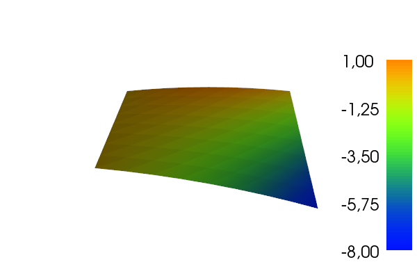

Figure 47: Example on 2D P1 elements.

Finite element approximation is particularly powerful in 2D and 3D because the method can handle a geometrically complex domain \( \Omega \) with ease. The principal idea is, as in 1D, to divide the domain into cells and use polynomials for approximating a function over a cell. Two popular cell shapes are triangles and quadrilaterals. It is common to denote finite elements on triangles and tetrahedrons as P while elements defined in terms of quadrilaterals and boxes are denoted by Q. Figures 47, 48, and 49 provide examples. P1 elements means linear functions (\( a_0 + a_1x + a_2y \)) over triangles, while Q1 elements have bilinear functions (\( a_0 + a_1x + a_2y + a_3xy \)) over rectangular cells. Higher-order elements can easily be defined.
Figure 47: Example on 2D P1 elements.
Figure 48: Example on 2D P1 elements in a deformed geometry.

Figure 49: Example on 2D Q1 elements.

Cells with triangular shape will be in main focus here. With the P1 triangular element, \( u \) is a linear function over each cell, as depicted in Figure 50, with discontinuous derivatives at the cell boundaries.
Figure 50: Example on scalar function defined in terms of piecewise linear 2D functions defined on triangles.

We give the vertices of the cells global and local numbers as in 1D. The degrees of freedom in the P1 element are the function values at a set of nodes, which are the three vertices. The basis function \( \basphi_i(x,y) \) is then 1 at the vertex with global vertex number \( i \) and zero at all other vertices. On an element, the three degrees of freedom uniquely determine the linear basis functions in that element, as usual. The global \( \basphi_i(x,y) \) function is then a combination of the linear functions (planar surfaces) over all the neighboring cells that have vertex number \( i \) in common. Figure 51 tries to illustrate the shape of such a "pyramid"-like function.
Figure 51: Example on a piecewise linear 2D basis function over a patch of triangles.

As in 1D, we split the integral over \( \Omega \) into a sum of integrals over cells. Also as in 1D, \( \basphi_i \) overlaps \( \basphi_j \) (i.e., \( \basphi_i\basphi_j\neq 0 \)) if and only if \( i \) and \( j \) are vertices in the same cell. Therefore, the integral of \( \basphi_i\basphi_j \) over an element is nonzero only when \( i \) and \( j \) run over the vertex numbers in the element. These nonzero contributions to the coefficient matrix are, as in 1D, collected in an element matrix. The size of the element matrix becomes \( 3\times 3 \) since there are three degrees of freedom that \( i \) and \( j \) run over. Again, as in 1D, we number the local vertices in a cell, starting at 0, and add the entries in the element matrix into the global system matrix, exactly as in 1D. All details and code appear below.
As in 1D, we can define the basis functions and the degrees of freedom in a reference cell and then use a mapping from the reference coordinate system to the physical coordinate system. We also need a mapping of local degrees of freedom numbers to global degrees of freedom numbers.
The reference cell in an \( (X,Y) \) coordinate system has vertices \( (0,0) \), \( (1,0) \), and \( (0,1) \), corresponding to local vertex numbers 0, 1, and 2, respectively. The P1 element has linear functions \( \refphi_r(X,Y) \) as basis functions, \( r=0,1,2 \). Since a linear function \( \refphi_r(X,Y) \) in 2D is on the form \( C_{r,0} + C_{r,1}X + C_{r,2}Y \), and hence has three parameters \( C_{r,0} \), \( C_{r,1} \), and \( C_{r,2} \), we need three degrees of freedom. These are in general taken as the function values at a set of nodes. For the P1 element the set of nodes is the three vertices. Figure 52 displays the geometry of the element and the location of the nodes.
Figure 52: 2D P1 element.

Requiring \( \refphi_r=1 \) at node number \( r \) and \( \refphi_r=0 \) at the two other nodes, gives three linear equations to determine \( C_{r,0} \), \( C_{r,1} \), and \( C_{r,2} \). The result is $$ \begin{align} \refphi_0(X,Y) &= 1 - X - Y, \tag{128}\\ \refphi_1(X,Y) &= X, \tag{129}\\ \refphi_2(X,Y) &= Y \tag{130} \end{align} $$
Higher-order approximations are obtained by increasing the polynomial order, adding additional nodes, and letting the degrees of freedom be function values at the nodes. Figure 53 shows the location of the six nodes in the P2 element.
Figure 53: 2D P2 element.

A polynomial of degree \( p \) in \( X \) and \( Y \) has \( n_p=(p+1)(p+2)/2 \) terms and hence needs \( n_p \) nodes. The values at the nodes constitute \( n_p \) degrees of freedom. The location of the nodes for \( \refphi_r \) up to degree 6 is displayed in Figure 54.
Figure 54: 2D P1, P2, P3, P4, P5, and P6 elements.

The generalization to 3D is straightforward: the reference element is a tetrahedron with vertices \( (0,0,0) \), \( (1,0,0) \), \( (0,1,0) \), and \( (0,0,1) \) in a \( X,Y,Z \) reference coordinate system. The P1 element has its degrees of freedom as four nodes, which are the four vertices, see Figure 55. The P2 element adds additional nodes along the edges of the cell, yielding a total of 10 nodes and degrees of freedom, see Figure 56.
Figure 55: P1 elements in 1D, 2D, and 3D.

Figure 56: P2 elements in 1D, 2D, and 3D.

The interval in 1D, the triangle in 2D, the tetrahedron in 3D, and its generalizations to higher space dimensions are known as simplex cells (the geometry) or simplex elements (the geometry, basis functions, degrees of freedom, etc.). The plural forms simplices and simplexes are also a much used shorter terms when referring to this type of cells or elements. The side of a simplex is called a face, while the tetrahedron also has edges.
Acknowledgment. Figures 52-56 are created by Anders Logg and taken from the FEniCS book: Automated Solution of Differential Equations by the Finite Element Method, edited by A. Logg, K.-A. Mardal, and G. N. Wells, published by Springer, 2012.
Let \( \refphi_r^{(1)} \) denote the basis functions associated with the P1 element in 1D, 2D, or 3D, and let \( \xdno{q(e,r)} \) be the physical coordinates of local vertex number \( r \) in cell \( e \). Furthermore, let \( \X \) be a point in the reference coordinate system corresponding to the point \( \x \) in the physical coordinate system. The affine mapping of any \( \X \) onto \( \x \) is then defined by $$ \begin{equation} \x = \sum_{r} \refphi_r^{(1)}(\X)\xdno{q(e,r)}, \tag{131} \end{equation} $$ where \( r \) runs over the local vertex numbers in the cell. The affine mapping essentially stretches, translates, and rotates the triangle. Straight or planar faces of the reference cell are therefore mapped onto straight or planar faces in the physical coordinate system. The mapping can be used for both P1 and higher-order elements, but note that the mapping itself always applies the P1 basis functions.
Figure 57: Affine mapping of a P1 element.

(kam 6: Worked example here?)
Instead of using the P1 basis functions in the mapping (131), we may use the basis functions of the actual P$d$ element: $$ \begin{equation} \x = \sum_{r} \refphi_r(\X)\xdno{q(e,r)}, \tag{132} \end{equation} $$ where \( r \) runs over all nodes, i.e., all points associated with the degrees of freedom. This is called an isoparametric mapping. For P1 elements it is identical to the affine mapping (131), but for higher-order elements the mapping of the straight or planar faces of the reference cell will result in a curved face in the physical coordinate system. For example, when we use the basis functions of the triangular P2 element in 2D in (132), the straight faces of the reference triangle are mapped onto curved faces of parabolic shape in the physical coordinate system, see Figure 58.
Figure 58: Isoparametric mapping of a P2 element.

From (131) or (132) it is easy to realize that the vertices are correctly mapped. Consider a vertex with local number \( s \). Then \( \refphi_s=1 \) at this vertex and zero at the others. This means that only one term in the sum is nonzero and \( \x=\xdno{q(e,s)} \), which is the coordinate of this vertex in the global coordinate system.
Let \( \tilde\Omega^r \) denote the reference cell and \( \Omega^{(e)} \) the cell in the physical coordinate system. The transformation of the integral from the physical to the reference coordinate system reads $$ \begin{align} \int_{\Omega^{(e)}}\basphi_i (\x) \basphi_j (\x) \dx &= \int_{\tilde\Omega^r} \refphi_i (\X) \refphi_j (\X) \det J\, \dX, \tag{133}\\ \int_{\Omega^{(e)}}\basphi_i (\x) f(\x) \dx &= \int_{\tilde\Omega^r} \refphi_i (\X) f(\x(\X)) \det J\, \dX, \tag{134} \end{align} $$ where \( \dx \) means the infinitesimal area element \( dx dy \) in 2D and \( dx dy dz \) in 3D, with a similar definition of \( \dX \). The quantity \( \det J \) is the determinant of the Jacobian of the mapping \( \x(\X) \). In 2D, $$ \begin{equation} J = \left[\begin{array}{cc} \frac{\partial x}{\partial X} & \frac{\partial x}{\partial Y}\\ \frac{\partial y}{\partial X} & \frac{\partial y}{\partial Y} \end{array}\right], \quad \det J = \frac{\partial x}{\partial X}\frac{\partial y}{\partial Y} - \frac{\partial x}{\partial Y}\frac{\partial y}{\partial X} \tp \tag{135} \end{equation} $$ With the affine mapping (131), \( \det J=2\Delta \), where \( \Delta \) is the area or volume of the cell in the physical coordinate system.
Remark. Observe that finite elements in 2D and 3D builds on the same ideas and concepts as in 1D, but there is simply much more to compute because the specific mathematical formulas in 2D and 3D are more complicated and the book keeping with dof maps also gets more complicated. The manual work is tedious, lengthy, and error-prone so automation by the computer is a must.
Our previous programs for doing 1D approximation by finite element basis function had a focus on all the small details needed to compute the solution. When going to 2D and 3D, the basic algorithms are the same, but the amount of computational details with basis functions, reference functions, mappings, numerical integration and so on, becomes overwhelming because of all the flexibility and choices of elements. For this purpose, we must, except in the simplest cases with P1 elements, use some well-developed, existing computer library. Here we shall use FEniCS, which is a free, open finite element package for advanced computations. The package can be programmed in C++ or Python. How it works is best illustrated by an example.
Our previous programs for doing 1D approximation by finite element basis function had a focus on all the small details needed to compute the solution. When going to 2D and 3D, the basic algorithms are the same, but the amount of computational details with basis functions, reference functions, mappings, numerical integration and so on, becomes overwhelming because of all the flexibility and choices of elements. For this purpose, we must, except in the simplest cases with P1 elements, use some well-developed, existing computer library. Here we shall use FEniCS, which is a free, open finite element package for advanced computations. The package can be programmed in C++ or Python. How it works is best illustrated by an example.
We want to approximate the function \( f(x)=2xy - x^2 \) by P1 and P2 elements on \( [0,2]\times[-1,1] \) using a division into \( 8\times 8 \) squares, which are then divided into rectangles and then into triangles.
Observe that the code employs the basic concepts from 1D, but is capable of using any element in FEniCS on any mesh in any number of space dimensions (!).
from fenics import *
def approx(f, V):
"""Return Galerkin approximation to f in V."""
u = TrialFunction(V)
v = TestFunction(V)
a = u*v*dx
L = f*v*dx
u = Function(V)
solve(a == L, u)
return u
def problem():
f = Expression('2*x[0]*x[1] - pow(x[0], 2)', degree=2)
mesh = RectangleMesh(Point(0,-1), Point(2,1), 8, 8)
V1 = FunctionSpace(mesh, 'P', 1)
u1 = approx(f, V1)
u1.rename('u1', 'u1')
u1_error = errornorm(f, u1, 'L2')
V2 = FunctionSpace(mesh, 'P', 2)
u2 = approx(f, V2)
u2.rename('u2', 'u2')
u2_error = errornorm(f, u2, 'L2')
print 'L2 errors: e1=%g, e2=%g' % (u1_error, u2_error)
# Simple plotting
plot(f, title='f', mesh=mesh)
plot(u1, title='u1')
plot(u2, title='u2')
if __name__ == '__main__':
problem()
interactive() # Enable plotting
Figure 59 shows the computed u1. The plots of
u2 and f are identical and therefore not shown.
The plot itself is not very informative about the approximation quality of
P1 elements. The output
of errors becomes
L2 errors: e1=0.0131493, e2=4.93418e-15
Figure 59: Plot of the computed approximation using Lagrange elements of second order.

The function approx is a general solver function for any \( f \) and
\( V \). We define the unknown \( u \) in the variational form \( a=a(u,v) = \int uv\dx \)
as a TrialFunction object and the test function \( v \) as a
TestFunction object. Then we define the variational form through
the integrand u*v*dx. The linear form \( L \) is similarly defined as
f*v*dx. Here, f must be an Expression object in FEniCS, i.e., a
formula defined by its implementation in C++. With a and L defined,
we re-define u to be a finite element function Function, which is
now the unknown scalar field to be computed by the simple expression
solve(a == L, u). We remark that the above function approx
is implemented in FEniCS (in a slightly more general fashion)
in the function project.
The problem function applies approx to solve a specific problem.
The definition of \( f \) must be expressed in C++. This part requires
two definitions: one of \( f \) and one of \( \Omega \), or more precisely:
the mesh (discrete \( \Omega \) divided into cells). The definition of
\( f \) is here expressed in C++ (it will be compiled for fast
evaluation), where the independent coordinates are given by a C/C++
vector x. This means that \( x \) is x[0], \( y \) is x[1], and \( z \) is
x[2]. Moreover, x[0]**2 must be written as pow(x[0], 2) in
C/C++.
Fortunately, we can easily integrate SymPy and Expression objects,
because SymPy can take a formula and translate it to C/C++ code, and
then we can require a Python code to numerically evaluate the formula.
Here is how we can specify f in SymPy and use it in FEniCS as an
Expression object:
>>> import sympy as sym
>>> x, y = sym.symbols('x[0] x[1]')
>>> f = 2*x*y - x**2
>>> print f
-x[0]**2 + 2*x[0]*x[1]
>>> f = sym.printing.ccode(f) # Translate to C code
>>> print f
-pow(x[0], 2) + 2*x[0]*x[1]
>>> import fenics as fe
>>> f = fe.Expression(f)
ccode generates C code and we use
x and y as placeholders for
x[0] and x[1], which represent the coordinate of
a general point x in any dimension. The output of ccode
can then be used directly in Expression.
The operation with defining a, L, and solving for a u is so
common that it can be done by single FEniCS command project:
u = project(f, V)
approx function!
If we want to do interpolation (or collocation) instead, we simply do
u = interpolate(f, V)
Having u and f available as finite element functions (Function
objects), we can easily plot the solution along a line since FEniCS
has functionality for evaluating a Function at arbitrary points
inside the domain. For example, here is the code for plotting \( u \) and
\( f \) along a line \( x=\hbox{const} \) or \( y=\hbox{const} \).
import numpy as np
import matplotlib.pyplot as plt
def comparison_plot2D(
u, f, # Function expressions in x and y
value=0.5, # x or y equals this value
variation='y', # independent variable
n=100, # no if intervals in plot
tol=1E-8, # tolerance for points inside the domain
plottitle='', # heading in plot
filename='tmp', # stem of filename
):
"""
Plot u and f along a line in x or y dir with n intervals
and a tolerance of tol for points inside the domain.
"""
v = np.linspace(-1+tol, 1-tol, n+1)
# Compute points along specified line:
points = np.array([(value, v_)
if variation == 'y' else (v_, value)
for v_ in v])
u_values = [u(point) for point in points] # eval. Function
f_values = [f(point) for point in points]
plt.figure()
plt.plot(v, u_values, 'r-', v, f_values, 'b--')
plt.legend(['u', 'f'], loc='upper left')
if variation == 'y':
plt.xlabel('y'); plt.ylabel('u, f')
else:
plt.xlabel('x'); plt.ylabel('u, f')
plt.title(plottitle)
plt.savefig(filename + '.pdf')
plt.savefig(filename + '.png')
It is now very easy to give some graphical impression of the approximations for various kinds of 2D elements. Basically, to solve the problem of approximating \( f=2xy-x^2 \) on \( \Omega = [-1,1]\times [0,2] \) by P2 elements on a \( 2\times 2 \) mesh, we want to integrate the function above with following type of computations:
import fenics as fe
f = fe.Expression('2*x[0]*x[1] - pow(x[0], 2)')
mesh = fe.RectangleMesh(fe.Point(1,-1), fe.Point(2,1), 2, 2)
V = fe.FunctionSpace(mesh, 'P', 2)
u = fe.project(f, V)
err = fe.errornorm(f, u, 'L2')
print err
import fenics as fe
import sympy as sym
x, y = sym.symbols('x[0] x[1]')
def problem(f, nx=8, ny=8, degrees=[1,2]):
"""
Plot u along x=const or y=const for Lagrange elements,
of given degrees, on a nx times ny mesh. f is a SymPy expression.
"""
f = sym.printing.ccode(f)
f = fe.Expression(f)
mesh = fe.RectangleMesh(
fe.Point(-1, 0), fe.Point(1, 2), 2, 2)
for degree in degrees:
if degree == 0:
# The P0 element is specified like this in FEniCS
V = fe.FunctionSpace(mesh, 'DG', 0)
else:
# The Lagrange Pd family of elements, d=1,2,3,...
V = fe.FunctionSpace(mesh, 'P', degree)
u = fe.project(f, V)
u_error = fe.errornorm(f, u, 'L2')
print '||u-f||=%g' % u_error, degree
comparison_plot2D(
u, f,
n=50,
value=0.4, variation='x',
plottitle='Approximation by P%d elements' % degree,
filename='approx_fenics_by_P%d' % degree,
tol=1E-3)
#fe.plot(u, title='Approx by P%d' % degree)
if __name__ == '__main__':
# x and y are global SymPy variables
f = 2*x*y - x**16
f = 2*x*y - x**2
problem(f, nx=2, ny=2, degrees=[0, 1, 2])
plt.show()
u(point)
evaluations.)
We show in Figure 60 how \( f \) is approximated by P0, P1, and P2 elements on a very coarse \( 2\times 2 \) mesh consisting of 8 cells.
We have also added the result obtained by P2 elements.
Figure 60: Comparison of P0, P1, and P2 approximations (left to right) along a line in a 2D mesh.

There are two striking features in the figure:
With this code, found in the file approx_fenics.py, we can easily run lots of experiments with the Lagrange element family. Just write the SymPy expression and choose the mesh resolution!
Consider a domain \( \Omega =[0,2] \) divided into the three elements \( [0,1] \), \( [1,1.2] \), and \( [1.2,2] \).
For P1 and P2 elements, set up the list of coordinates and nodes
(nodes) and the numbers of the nodes that belong to each element
(elements) in two cases: 1) nodes and elements numbered from left to
right, and 2) nodes and elements numbered from right to left.
Filename: fe_numberings1.
Repeat Problem 11: Define nodes and elements, but define the
data structures vertices, cells, and dof_map instead of
nodes and elements.
Filename: fe_numberings2.
Problem 11: Define nodes and elements describes a element mesh with a total of five elements, but with two different element and node orderings. For each of the two orderings, make a \( 5\times 5 \) matrix and fill in the entries that will be nonzero.
Hint. A matrix entry \( (i,j) \) is nonzero if \( i \) and \( j \) are nodes in the same element.
Filename: fe_sparsity_pattern.
Perform symbolic calculations to find formulas for the coefficient matrix and right-hand side when approximating \( f(x) = \sin (x) \) on \( \Omega=[0, \pi] \) by two P1 elements of size \( \pi/2 \). Solve the system and compare \( u(\pi/2) \) with the exact value 1.
Filename: fe_sin_P1.
Given $$ \begin{equation*} f(x) = \tanh(s(x-\half))\end{equation*} $$ use the Galerkin or least squares method with finite elements to find an approximate function \( u(x) \). Choose \( s=20 \) and try \( N_e=4,8,16 \) P1 elements and \( N_e=2,4,8 \) P2 elements. Integrate \( f\basphi_i \) numerically.
Hint.
You can automate the computations by calling the approximate method
in the fe_approx1D_numint module.
Filename: fe_tanh_P1P2.
a) Solve Problem 15: Approximate a steep function by P1 and P2 elements using \( N_e=1,2,4 \) P3 and P4 elements.
b) How will an interpolation method work in this case with the same number of nodes?
Filename: fe_tanh_P3P4.
The theory (115) from the section Computing the error of the approximation predicts that the error in the P$d$ approximation of a function should behave as \( h^{d+1} \), where \( h \) is the length of the element. Use experiments to verify this asymptotic behavior (i.e., for small enough \( h \)). Choose three examples: \( f(x)=Ae^{-\omega x} \) on \( [0,3/\omega] \), \( f(x) = A\sin (\omega x) \) on \( \Omega=[0, 2\pi/\omega] \) for constant \( A \) and \( \omega \), and \( f(x)=\sqrt{x} \) on \( [0,1] \).
Hint 1. Run a series of experiments: \( (h_i,E_i) \), \( i=0,\ldots,m \), where \( E_i \) is the \( L^2 \) norm of the error corresponding to element length \( h_i \). Assume an error model \( E=Ch^r \) and compute \( r \) from two successive experiments: $$ r_i = \ln (E_{i+1}/E_i)/\ln (h_{i+1}/h_i),\quad i=0,\ldots,m-1\tp$$ Hopefully, the sequence \( r_0,\ldots,r_{m-1} \) converges to the true \( r \), and \( r_{m-1} \) can be taken as an approximation to \( r \). Run such experiments for different \( d \) for the different \( f(x) \) functions.
Hint 2.
The approximate function in fe_approx1D_numint.py is handy for
calculating the numerical solution. This function returns the
finite element solution as the coefficients \( \sequencei{c} \).
To compute \( u \), use u_glob from the same module.
Use the Trapezoidal rule to integrate the \( L^2 \) error:
xc, u = u_glob(c, vertices, cells, dof_map)
e = f_func(xc) - u
L2_error = 0
e2 = e**2
for i in range(len(xc)-1):
L2_error += 0.5*(e2[i+1] + e2[i])*(xc[i+1] - xc[i])
L2_error = np.sqrt(L2_error)
u_glob returns coordinates xc and corresponding u values
where some of the coordinates (the cell vertices) coincides, because
the solution is computed in one element at a time, using all local
nodes. Also note that there are many coordinates in \( xc \) per cell
such that we can accurately compute the error inside each cell.
Filename: Pd_approx_error.
Approximate the step function $$ \begin{equation*} f(x) = \left\lbrace\begin{array}{ll} 0 & \mbox{ if } 0\leq x < \halfi,\\ 1 & \mbox{ if } \halfi \leq x \geq \halfi \end{array}\right. \end{equation*} $$ by 2, 4, 8, and 16 elements and P1, P2, P3, and P4. Compare approximations visually.
Hint. This \( f \) can also be expressed in terms of the Heaviside function \( H(x) \): \( f(x) = H(x-\halfi) \). Therefore, \( f \) can be defined by
f = sym.Heaviside(x - sym.Rational(1,2))
approximate function in the
fe_approx1D.py module an obvious candidate to solve the
problem. However, sympy does not handle symbolic integration
with this particular integrand, and the approximate function faces a problem
when converting f to a Python function (for plotting) since
Heaviside is not an available function in numpy.
An alternative is to perform hand calculations. This is an instructive
task, but in practice only feasible for few elements and P1 and P2 elements.
It is better to copy the functions element_matrix, element_vector,
assemble, and approximate from the fe_approx1D_numint.py file
and edit these functions such that they can compute approximations
with f given as a Python function and not a symbolic expression.
Also assume that phi computed by the basis function is a Python
callable function. Remove all instances of the symbolic variable
and associated code.
Filename: fe_Heaviside_P1P2.
a)
Assume we have basis functions \( \basphi_i(x,y) \) in 2D that are
orthogonal such that \( (\basphi_i,\basphi_j)=0 \) when \( i\neq j \). The
function least_squares in the file approx2D.py will then spend much time on computing
off-diagonal terms in the coefficient matrix that we know are zero.
To speed up the computations, make a version least_squares_orth that
utilizes the orthogonality among the basis functions.
b) Apply the function to approximate $$ f(x,y) = x(1-x)y(1-y)e^{-x-y}$$ on \( \Omega = [0,1]\times [0,1] \) via basis functions $$ \basphi_i(x,y) = \sin ((p+1)\pi x)\sin((q+1)\pi y),\quad i=q(N_x+1) + p, $$ where \( p=0,\ldots,N_x \) and \( q=0,\ldots,N_y \).
Hint.
Get ideas from the function least_squares_orth in
the section Orthogonal basis functions and
file approx1D.py.
c)
Make a unit test for the least_squares_orth function.
Filename: approx2D_ls_orth.
Consider approximation of some \( f(x) \) on an interval \( \Omega \) using the least squares or Galerkin methods with P1 elements. Derive the element matrix and vector using the Trapezoidal rule (123) for calculating integrals on the reference element. Assemble the contributions, assuming a uniform cell partitioning, and show that the resulting linear system has the form \( c_i=f(\xno{i}) \) for \( i\in\If \).
Filename: fe_P1_trapez.
We shall approximate the function $$ f(x) = 1 + \epsilon\sin (2\pi nx),\quad x\in \Omega = [0,1],$$ where \( n\in\Integer \) and \( \epsilon \geq 0 \).
a) Plot \( f(x) \) for \( n=1,2,3 \) and find the wave length of the function.
b) We want to use \( N_P \) elements per wave length. Show that the number of elements is then \( nN_P \).
c) The critical quantity for accuracy is the number of elements per wave length, not the element size in itself. It therefore suffices to study an \( f \) with just one wave length in \( \Omega = [0,1] \). Set \( \epsilon = 0.5 \).
Run the least squares or projection/Galerkin method for \( N_P=2,4,8,16,32 \). Compute the error \( E=||u-f||_{L^2} \).
Hint 1.
Use the fe_approx1D_numint module to compute \( u \) and use
the technique from the section Computing the error of the approximation to
compute the norm of the error.
Hint 2. Read up on the Nyquist–Shannon sampling theorem.
d) Repeat the set of experiments in the above point, but use interpolation/collocation based on the node points to compute \( u(x) \) (recall that \( c_i \) is now simply \( f(\xno{i}) \)). Compute the error \( E=||u-f||_{L^2} \). Which method seems to be most accurate?
Filename: fe_P1_vs_interp.
Extend the approx2D.py code to 3D applying ideas from the section Extension to 3D. Construct some 3D problem to make a test function for the implementation.
Hint.
Drop symbolic integration since it is in general too slow for 3D problems.
Also use scipy.integrate.nquad instead of sympy.mpmath.quad
for numerical integration, since it is much faster.
Filename: approx3D.
Redo Exercise 20: Use the Trapezoidal rule and P1 elements, but use P2 elements and Simpson's rule based on sampling the integrands at the nodes in the reference cell.
Filename: fe_P2_simpson.
Extend the code from the section Refined code with curve plotting to 3D.